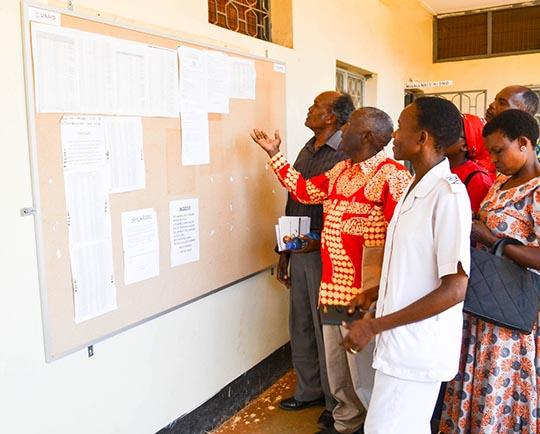

This section provides a place for public announcements, government information and important updates concerning communities across Ituri Province. Visitors should confirm announcements through the relevant official government offices.
Information about government programmes, public activities and important decisions affecting the province.

Stay informed about important public announcements, government updates and notices affecting communities across Ituri Province.
Important information intended to support communities, promote awareness and encourage public participation.
A section for verified public safety information, community alerts and other important updates.
Citizens are encouraged to follow verified government communication channels and contact the relevant provincial offices for clarification about public notices.